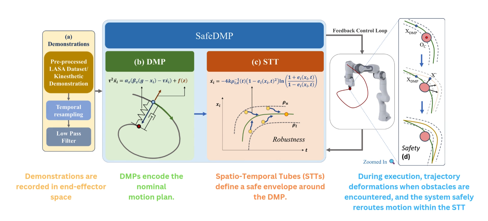

Robots operating in human-centric environments must be both robust to disturbances and provably safe from collisions. Achieving these properties simultaneously and effi- ciently remains a central challenge. While Dynamic Movement Primitives (DMPs) offer inherent stability and generalization from single demonstrations, they lack formal safety guarantees. Conversely, formal methods like Control Barrier Functions (CBFs) provide provable safety but often rely on computa- tionally expensive, real-time optimization, hindering their use in high-frequency control. This paper introduces SafeDMPs, a novel framework that resolves this trade-off. We integrate the closed-form efficiency and dynamic robustness of DMPs with a provably safe, non-optimization-based control law derived from Spatio-Temporal Tubes (STTs). This synergy allows us to generate motions that are not only robust to perturbations and adaptable to new goals, but also guaranteed to avoid static and dynamic obstacles. Our approach achieves a closed-form solution for a problem that traditionally requires online opti- mization. Experimental results on a 7-DOF robot manipulator demonstrate that SafeDMPs is orders of magnitude faster and more accurate than optimization-based baselines, making it an ideal solution for real-time, safe, and collaborative robotics.

Overview of the SafeDMP framework combining DMP trajectory generation with safety guarantees via Spatio-Temporal Tubes.
The robotic arm picks and places objects while a human hand randomly blocks its motion repeatedly. The arm must avoid collisions and continue the task smoothly.
The arm wipes a patient while avoiding accidental interference from a healthcare worker entering the workspace.
The arm moves through a multi-obstacle environment while adapting to obstacles that are moved around by a human operator.
Comparing the performance of SafeDMPs against baseline methods in a dynamic environment with moving obstacles intersecting the nominal trajectory.
Validating the performance of SafeDMPs in Pybullet in presense of randomly spawned obstacles along the nominal trajectory.
Validating the performance of SafeDMPs in Isaac Sim in presense of obstacles along the nominal trajectory.
The video explaining the proposed method and its application in both simulation and real-world scenarios.
This work was carried out as part of the Imitation Learning course project in the M.Tech. program in Robotics and Autonomous Systems at the Indian Institute of Science. We thank Dr. Ravi Prakash, the course instructor, for his guidance and support, and the members of Stoch Lab for their valuable assistance during the experiments.
@inproceedings{}